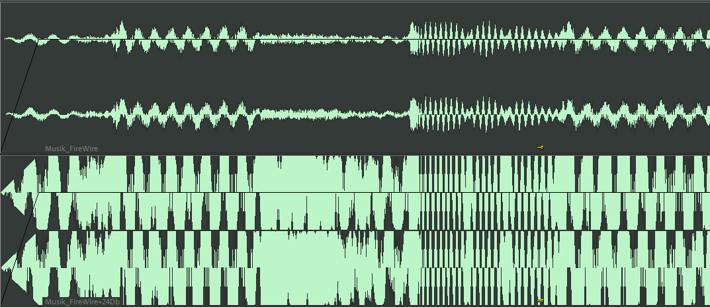
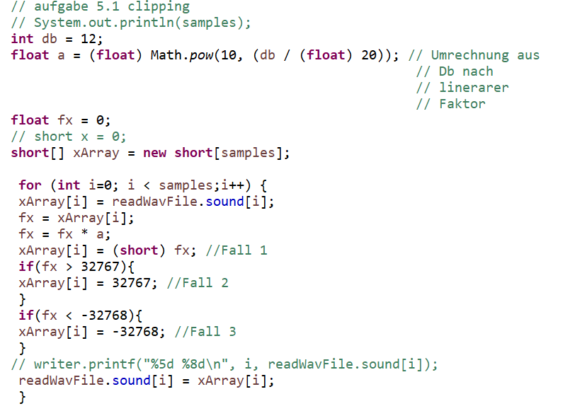
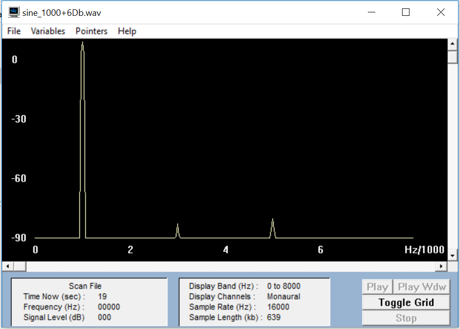
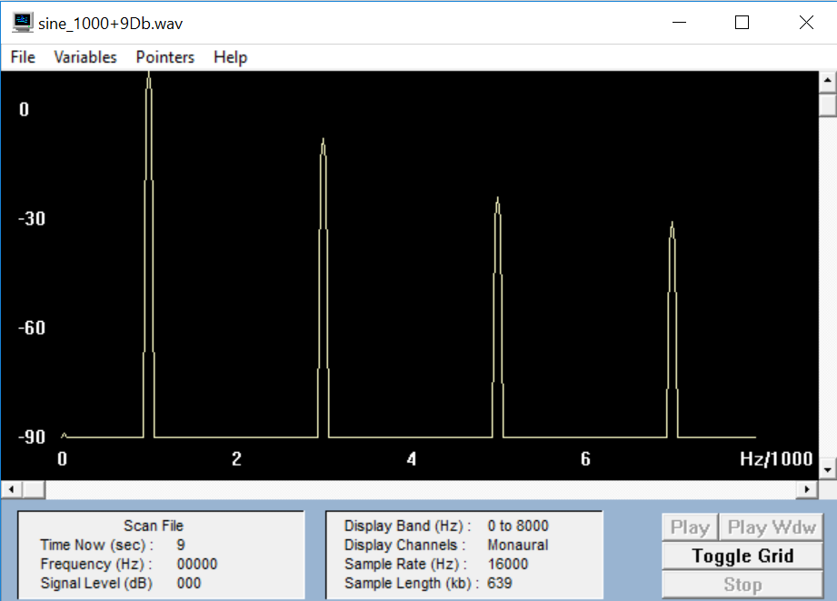
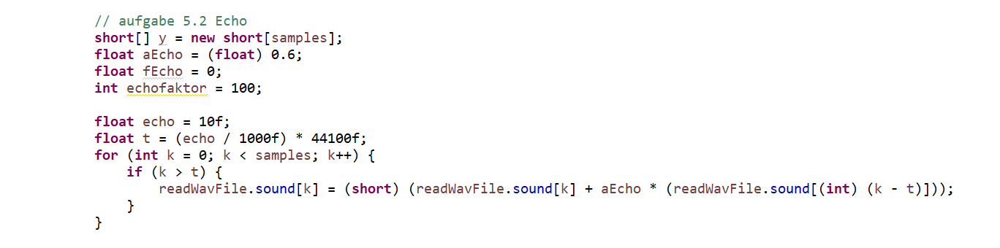
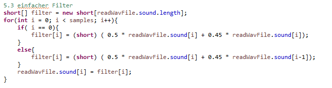
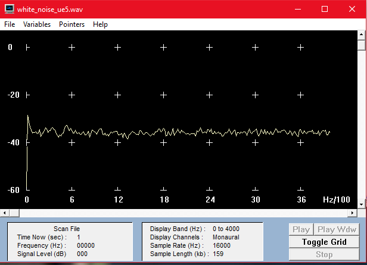
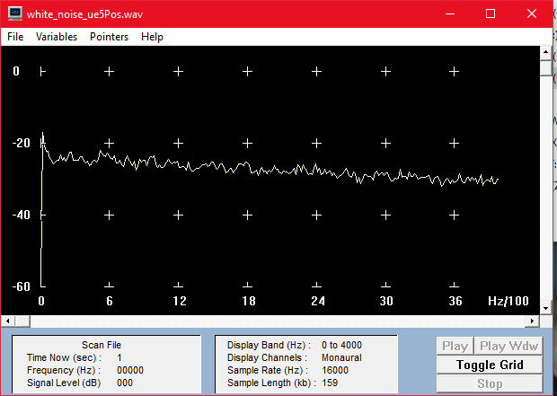
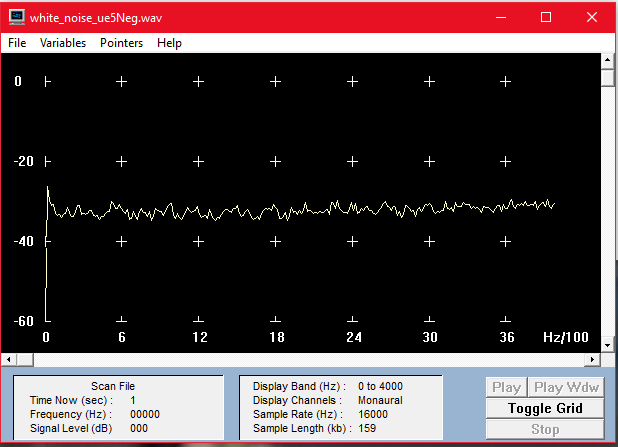

Übung 5
Aufgabe 1 - a
Musik Original
Musik +3 dB
Musik +6 dB
Musik +9 dB
Musik +12 dB
Musik +15 dB
Musik +18 dB
Musik +21 dB
Clipping:
.PNG)
.PNG)

Code:

Aufgabe 1 - b
Die erste Verzerrung ist bei einer Verstärkung von +15dB hörbar.
Deutlich hörbar ist es bei einer Verstärkung von +21dB.
Aufgabe 1 - c
Sine 1000 Original
Sine 1000 +6 dB

+6 dB
Grundton: -15 dB ⇾ Z ≈ 0,178
Sine 1000 +9 dB

+9 dB
Grundton: -13 dB ⇾ Z ≈ 0,224
1. Oberton: -32 dB ⇾ Z ≈ 0,025
2. Oberton: -48 dB ⇾ Z ≈ 0,00398
3. Oberton: -55 dB ⇾ Z ≈ 0,0018
Sine 1000 +12 dB
+12 dB
Grundton: -13 dB ⇾ Z ≈ 0,224
1. Oberton: -27 dB ⇾ Z ≈ 0,045
2. Oberton: -42 dB ⇾ Z ≈ 0,0079
3. Oberton: -42 dB ⇾ Z ≈ 0,0079
Klirrfaktor
+6 dB ⇾ K = 0
+9 dB ⇾ K = 0,113
+12 dB ⇾ K = 0,203
Aufgabe 2 - a
Sprache Original
Sprache Echo 10ms
Sprache Echo 100 ms
Sprache Echo 200ms
Musik Original
Sprache Echo 10ms
Sprache Echo 100 ms
Sprache Echo 200ms
Aufgabe 2 - b
Code:

Aufgabe 3 - a
Musik Original
Musik Filter 0.5*x(k)+0.45*x(k-1)
Musik Filter 0.5*x(k)-0.45*x(k-1)

Aufgabe 3 - b
White Noise Original
White Noise Filter 0.5*x(k)+0.45*x(k-1)
White Noise Filter 0.5*x(k)-0.45*x(k-1)
Gram:
White Noise Original

White Noise Filter 0.5*x(k)+0.45*x(k-1)

Realisiert wurde ein Tiefpass-Filter.
White Noise Filter 0.5*x(k)-0.45*x(k-1)

Realisiert wurde ein Hochpass-Filter.